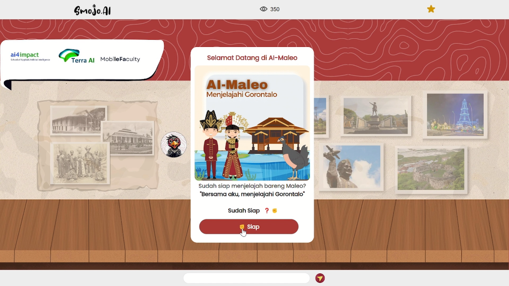
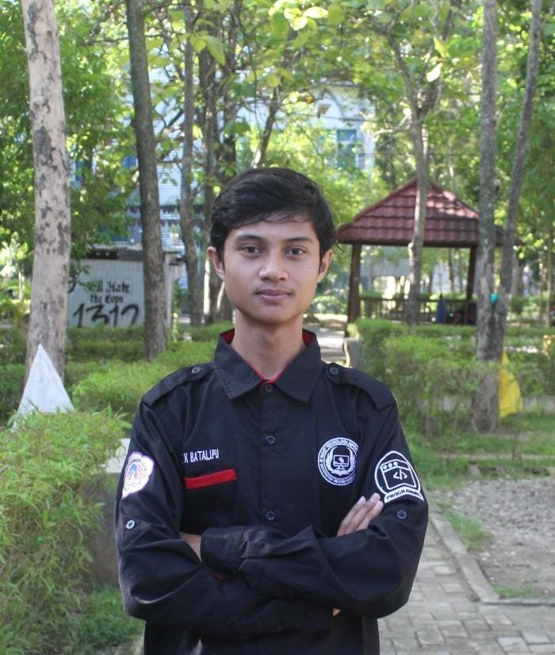
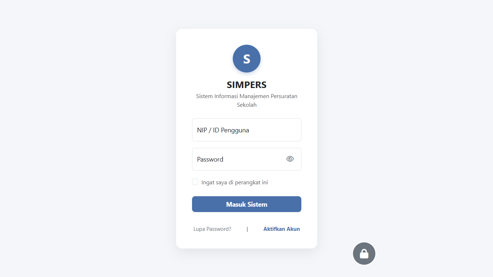
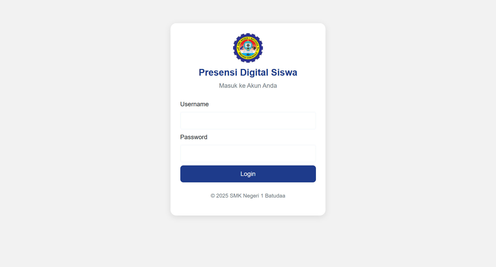
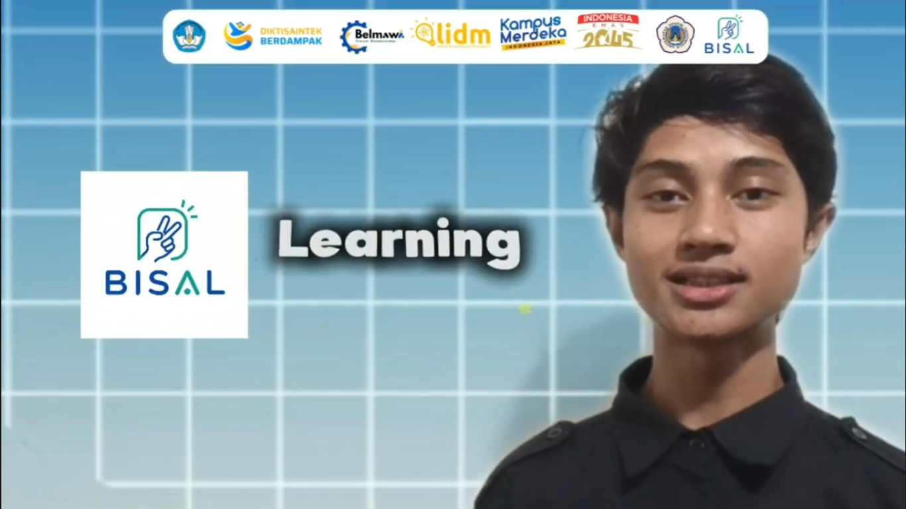

AI Maleo
Chatbot Budaya Maleo merupakan sistem chatbot berbasis web yang dirancang khusus untuk menyediakan informasi seputar kebudayaan dan daerah Provinsi Gorontalo.
Lihat Selengkapnya- Smojo
- ChatGPT API
- Budaya Gorontalo
Halo, saya
Mahasiswa Sistem Informasi yang suka membangun aplikasi web dan Android.
Lihat proyek saya Hubungi sayaSaya Alumni SMK Negeri 1 Popayato Timur, Jurusan Rekayasa Perangkat Lunak

Saya mahasiswa Sistem Informasi di Universitas Negeri Gorontalo. Di UKM Risti (Riset Teknologi Informasi) saya menjabat sebagai Ketua Divisi Programmin.
Saya mengerjakan proyek sistem informasi, aplikasi Android, dan lomba teknologi.
Teknologi yang pernah saya pakai dalam proyek nyata.
Beberapa karya yang pernah saya bangun atau rancang.

Chatbot Budaya Maleo merupakan sistem chatbot berbasis web yang dirancang khusus untuk menyediakan informasi seputar kebudayaan dan daerah Provinsi Gorontalo.
Lihat Selengkapnya
Sistem informasi manajemen persuratan sekolah berbasis ITIL: surat masuk dan keluar, disposisi dengan indikator SLA, serta arsip digital.
Lihat Selengkapnya
Presensi Digital Siswa: Sistem informasi Presensi yang terintegrasi antara siswa, guru kelas, gueu mata pelajaran, tata Usaha, Bimbingan konseling, Kepala sekolah.
Lihat Selengkapnya
Platform belajar adaptif bagi siswa tunarungu di SLB Negeri Kota Gorontalo, dengan personalisasi materi dan analitik penguasaan belajar. Karya tim untuk LIDM 2026.
Lihat SelengkapnyaTerbuka untuk diskusi, kolaborasi, dan belajar bersama.